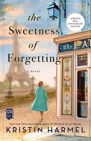

A few years ago, my family rented an RV, along with two other families, and drove up the coast of California, Oregon and Washington. We stopped in a few towns in each state, staying at the same campsites and cooking dinner altogether and doing activities like riding dune buggies and river rafting!
My favorite restaurant is Small World. I love it because it's a small business that serves incredible food and I've been going there my whole life!
Poke is my favorite! I love poke bowls with all the fixings but I could eat just raw fish with some sauce all day every day.
| Title | Cover | Author | Summary |
|---|---|---|---|
| Little Women | Louisa May Alcott | It is set during and after the Civil War and tells the story of the March family, principally the four girls: Meg, Jo, Beth, and Amy. The girls struggle and grow as a family while their father is serving in the war and learn the value of hard work, self-sacrifice, and love. | |
| When We Lost Our Heads | Heather O'Neill | Traveling from a repressive finishing school to a vibrant brothel, taking readers firsthand into the brutality of factory life and the opulent lives of Montreal's wealthy in the 19th century. | |
| A Court of Silver Flames | Sarah J. Maas | The fifth book in the Court of Thorns and Roses series that follows a character's journey to rebuilding a life after everything she knew was taken away from her. | |
| The Sweetness of Forgetting |  | Kristin Harmel | A historical fiction novel that follows a woman who must travel from Cape Cod to Paris to uncover a family secret for her dying grandmother that could change everything. |